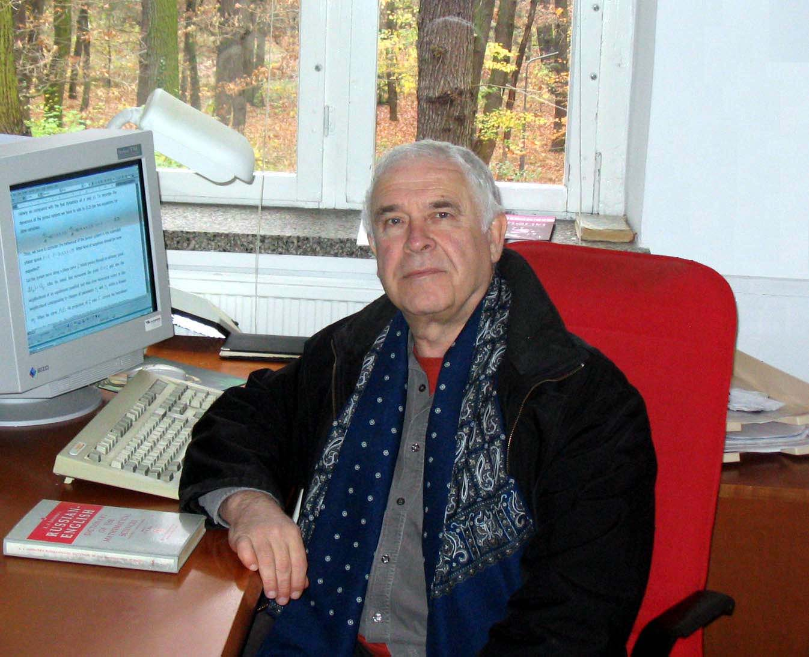

Институт физики атмосферыим. А.М.Обухова РАН
Лаборатория Математической Экологии
Юрий Михайлович Свирежев 22.09.1938 - 22.02.2007

Очень интересна идея о внутренних бифуркациях, которые определяют виртуальное богатство поведения системы, но которые проявляются лишь в условиях иерархии её временных или пространственных масштабов.
Ю.М. Свирежев